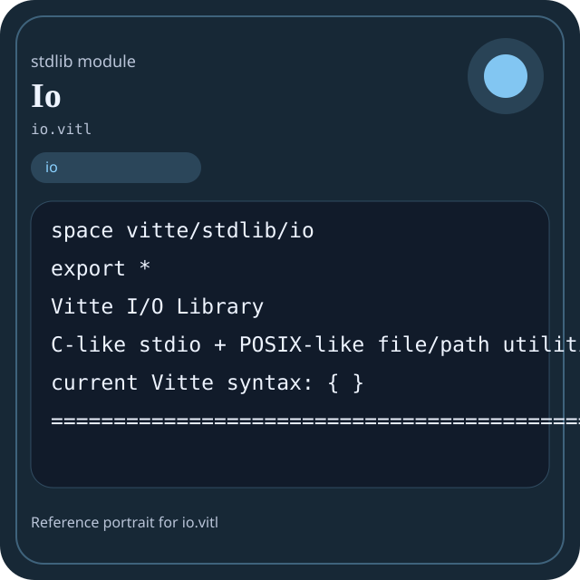

Stdlib module io.vitl
This page is a wiki-style reference for one concrete stdlib file. It explains what the file owns, where it fits in the family, and how to decide whether this is the right surface to depend on.

io.vitl.Family: io
Kind: public stdlib surface
Page style: this reference follows the same “encyclopedic card + portrait + usage contract” logic as the keyword pages, but for stdlib modules.
Summary
- Overview
- Purpose
- Taxonomy
- Implementation profile
- Top-level API inventory
- Position in family
- Declaration map
- Representative signatures
- How to use this module
- User example
- Keyword coverage
- Source shape
- Source landmarks
- Source organization
- Complete API catalog
- Integration boundaries
- Composition guidance
- Relationship table
- Neighbor modules
Overview
| Field | Value |
|---|---|
| Path | io.vitl |
| Family | io |
| Kind | public stdlib surface |
| Line count | 1136 |
| Declared procedures | 132 |
| Declared forms/picks | 12 |
`io.vitl` is a public stdlib surface inside the `io` family. It should be read as one focused slice of the broader family responsibility: File, buffer, stream, stdio, and host-runtime access helpers.
Purpose
This file should be chosen because of responsibility, not because its name “sounds close enough”. Inside the io family, it carries one focused part of the contract and keeps that responsibility separate from neighboring concerns.
- A manifest is loaded through `io`, parsed elsewhere, validated elsewhere, and only then emitted back through `io`.
- A stdio helper should explain where user-facing text enters the flow.
Taxonomy
Think of this page as a generated encyclopedia entry rather than a hand-written tutorial. The goal is to show what kind of module this is, how dense it is, and what reading strategy makes sense before depending on it.
- Large algorithm surface: this file exposes many procedures and likely acts as a domain toolkit rather than a single thin wrapper.
- Owns domain vocabulary: the module declares data shapes in addition to executable helpers, so its types are part of the contract.
- Has tuning constants: part of the module behavior is controlled by named constants that document default precision, limits, or policy.
- Minimal top-level dependencies: the module reads as mostly self-contained from its opening declarations.
- Explicit export surface: the file ends with visible export declarations instead of relying only on implicit namespace discovery.
Implementation profile
This profile is inferred directly from the source text. It does not replace reading the file, but it tells you quickly whether the module is mostly declarative, loop-heavy, branch-heavy, or organized around many small exits.
| Signal | Count | What it suggests |
|---|---|---|
if | 66 | Branching density and local decision-making. |
while | 2 | Loop-heavy or iterative implementation style. |
for | 0 | Collection-style traversal at source level. |
match | 0 | Variant-driven branching or grammar-style decoding. |
let | 37 | Local state and intermediate value density. |
give | 182 | Number of explicit exit points and result shaping. |
Top-level API inventory
| Surface | Items |
|---|---|
| Procedures | io_ok, io_name, io_version, io_modules, io_module_count, io_manifest, io_health, io_summary, io_failed, null_file, stdin_file, stdout_file |
| Forms | IoResult, File, FileStat, DirEntry, Buffer, TextReader, TextWriter, PathInfo, IOLibraryManifest, IOLibraryHealth, IOLibrarySummary |
| Picks | IoStatus |
| Constants | IO_VERSION, EOF, NULL_FD, SEEK_SET, SEEK_CUR, SEEK_END, IO_READ, IO_WRITE, IO_APPEND, IO_CREATE, IO_TRUNC, IO_BINARY |
| Exports | * |
Imported surfaces
This file does not advertise a top-level `use` surface in its opening declarations. That often means it is either self-contained or an aggregation layer.
Position in family
This file is module 1 of 8 in the io family when ordered by path. By procedure count it ranks 1, and by line count it ranks 1. Those ranks are useful as rough signals of breadth, not as quality judgments.
Declaration map
The declaration map turns raw source into a scan-friendly catalog. It is useful when the file is large enough that a reader wants to orient by kinds of surfaces first.
| Line | Name | Kind | Role |
|---|---|---|---|
| 1 | vitte/stdlib/io | space | Declares the namespace that anchors this file in the stdlib tree. |
| 11 | IO_VERSION | const | Defines a named constant reused across the module. |
| 13 | EOF | const | Defines a named constant reused across the module. |
| 14 | NULL_FD | const | Defines a named constant reused across the module. |
| 16 | SEEK_SET | const | Defines a named constant reused across the module. |
| 17 | SEEK_CUR | const | Defines a named constant reused across the module. |
| 18 | SEEK_END | const | Defines a named constant reused across the module. |
| 20 | IO_READ | const | Defines a named constant reused across the module. |
| 21 | IO_WRITE | const | Defines a named constant reused across the module. |
| 22 | IO_APPEND | const | Defines a named constant reused across the module. |
| 23 | IO_CREATE | const | Defines a named constant reused across the module. |
| 24 | IO_TRUNC | const | Defines a named constant reused across the module. |
| 25 | IO_BINARY | const | Defines a named constant reused across the module. |
| 26 | IO_TEXT | const | Defines a named constant reused across the module. |
| 28 | READ | const | Defines a named constant reused across the module. |
| 29 | WRITE | const | Defines a named constant reused across the module. |
| 30 | APPEND | const | Defines a named constant reused across the module. |
| 31 | READ_WRITE | const | Defines a named constant reused across the module. |
| 32 | WRITE_READ | const | Defines a named constant reused across the module. |
| 33 | APPEND_READ | const | Defines a named constant reused across the module. |
| 34 | READ_BINARY | const | Defines a named constant reused across the module. |
| 35 | WRITE_BINARY | const | Defines a named constant reused across the module. |
| 36 | APPEND_BINARY | const | Defines a named constant reused across the module. |
| 38 | _IOFBF | const | Defines a named constant reused across the module. |
| 39 | _IOLBF | const | Defines a named constant reused across the module. |
| 40 | _IONBF | const | Defines a named constant reused across the module. |
| 42 | PATH_SEP | const | Defines a named constant reused across the module. |
| 43 | EXT_SEP | const | Defines a named constant reused across the module. |
| 44 | MAX_PATH | const | Defines a bound or precision constant that shapes runtime behavior. |
| 46 | IoStatus | pick | Introduces a tagged variant type used to model distinct outcomes. |
| 59 | IoResult | form | Introduces a structured data shape that other procedures can exchange. |
| 65 | File | form | Introduces a structured data shape that other procedures can exchange. |
| 78 | FileStat | form | Introduces a structured data shape that other procedures can exchange. |
| 91 | DirEntry | form | Introduces a structured data shape that other procedures can exchange. |
| 100 | Buffer | form | Introduces a structured data shape that other procedures can exchange. |
| 107 | TextReader | form | Introduces a structured data shape that other procedures can exchange. |
| 113 | TextWriter | form | Introduces a structured data shape that other procedures can exchange. |
| 118 | PathInfo | form | Introduces a structured data shape that other procedures can exchange. |
| 126 | IOLibraryManifest | form | Introduces a structured data shape that other procedures can exchange. |
| 133 | IOLibraryHealth | form | Introduces a structured data shape that other procedures can exchange. |
| 142 | IOLibrarySummary | form | Introduces a structured data shape that other procedures can exchange. |
| 147 | io_ok | proc | Represents one top-level surface in the file contract and should be read as part of the module boundary. |
| 155 | io_name | proc | Represents one top-level surface in the file contract and should be read as part of the module boundary. |
| 159 | io_version | proc | Represents one top-level surface in the file contract and should be read as part of the module boundary. |
| 163 | io_modules | proc | Represents one top-level surface in the file contract and should be read as part of the module boundary. |
| 175 | io_module_count | proc | Represents one top-level surface in the file contract and should be read as part of the module boundary. |
| 179 | io_manifest | proc | Represents one top-level surface in the file contract and should be read as part of the module boundary. |
| 188 | io_health | proc | Represents one top-level surface in the file contract and should be read as part of the module boundary. |
| 199 | io_summary | proc | Represents one top-level surface in the file contract and should be read as part of the module boundary. |
| 206 | io_failed | proc | Represents one top-level surface in the file contract and should be read as part of the module boundary. |
| 214 | null_file | proc | Owns byte movement or host I/O interaction. |
| 229 | stdin_file | proc | Owns byte movement or host I/O interaction. |
| 244 | stdout_file | proc | Owns byte movement or host I/O interaction. |
| 259 | stderr_file | proc | Owns byte movement or host I/O interaction. |
| 274 | file_is_open | proc | Owns byte movement or host I/O interaction. |
| 278 | file_can_read | proc | Owns byte movement or host I/O interaction. |
| 282 | file_can_write | proc | Owns byte movement or host I/O interaction. |
| 286 | mode_readable | proc | Represents one top-level surface in the file contract and should be read as part of the module boundary. |
| 308 | mode_writable | proc | Represents one top-level surface in the file contract and should be read as part of the module boundary. |
| 333 | mode_append | proc | Represents one top-level surface in the file contract and should be read as part of the module boundary. |
| 346 | mode_binary | proc | Represents one top-level surface in the file contract and should be read as part of the module boundary. |
| 350 | fopen | proc | Represents one top-level surface in the file contract and should be read as part of the module boundary. |
| 369 | freopen | proc | Represents one top-level surface in the file contract and should be read as part of the module boundary. |
| 374 | fclose | proc | Represents one top-level surface in the file contract and should be read as part of the module boundary. |
| 382 | fflush | proc | Represents one top-level surface in the file contract and should be read as part of the module boundary. |
| 390 | ferror | proc | Represents one top-level surface in the file contract and should be read as part of the module boundary. |
| 398 | feof | proc | Represents one top-level surface in the file contract and should be read as part of the module boundary. |
| 402 | clearerr | proc | Represents one top-level surface in the file contract and should be read as part of the module boundary. |
| 409 | rewind | proc | Represents one top-level surface in the file contract and should be read as part of the module boundary. |
| 417 | fseek | proc | Represents one top-level surface in the file contract and should be read as part of the module boundary. |
| 439 | ftell | proc | Represents one top-level surface in the file contract and should be read as part of the module boundary. |
| 443 | fgetpos | proc | Represents one top-level surface in the file contract and should be read as part of the module boundary. |
| 447 | fsetpos | proc | Represents one top-level surface in the file contract and should be read as part of the module boundary. |
| 453 | fread | proc | Represents one top-level surface in the file contract and should be read as part of the module boundary. |
| 461 | fwrite | proc | Represents one top-level surface in the file contract and should be read as part of the module boundary. |
| 469 | fgetc | proc | Represents one top-level surface in the file contract and should be read as part of the module boundary. |
| 477 | getc | proc | Represents one top-level surface in the file contract and should be read as part of the module boundary. |
| 481 | getchar | proc | Represents one top-level surface in the file contract and should be read as part of the module boundary. |
| 485 | fputc | proc | Represents one top-level surface in the file contract and should be read as part of the module boundary. |
| 493 | putc | proc | Represents one top-level surface in the file contract and should be read as part of the module boundary. |
| 497 | putchar | proc | Represents one top-level surface in the file contract and should be read as part of the module boundary. |
| 501 | ungetc | proc | Represents one top-level surface in the file contract and should be read as part of the module boundary. |
| 509 | fgets | proc | Represents one top-level surface in the file contract and should be read as part of the module boundary. |
| 521 | gets | proc | Represents one top-level surface in the file contract and should be read as part of the module boundary. |
| 525 | fputs | proc | Represents one top-level surface in the file contract and should be read as part of the module boundary. |
| 533 | puts | proc | Represents one top-level surface in the file contract and should be read as part of the module boundary. |
| 539 | print | proc | Represents one top-level surface in the file contract and should be read as part of the module boundary. |
| 543 | println | proc | Represents one top-level surface in the file contract and should be read as part of the module boundary. |
| 547 | eprint | proc | Represents one top-level surface in the file contract and should be read as part of the module boundary. |
| 551 | eprintln | proc | Represents one top-level surface in the file contract and should be read as part of the module boundary. |
| 556 | emit_string | proc | Turns internal values into a transport or textual representation. |
| 560 | print_int | proc | Represents one top-level surface in the file contract and should be read as part of the module boundary. |
| 564 | println_int | proc | Represents one top-level surface in the file contract and should be read as part of the module boundary. |
| 569 | print_float | proc | Represents one top-level surface in the file contract and should be read as part of the module boundary. |
| 573 | println_float | proc | Represents one top-level surface in the file contract and should be read as part of the module boundary. |
| 578 | print_bool | proc | Represents one top-level surface in the file contract and should be read as part of the module boundary. |
| 586 | println_bool | proc | Represents one top-level surface in the file contract and should be read as part of the module boundary. |
| 591 | printf | proc | Represents one top-level surface in the file contract and should be read as part of the module boundary. |
| 597 | fprintf | proc | Represents one top-level surface in the file contract and should be read as part of the module boundary. |
| 603 | sprintf | proc | Represents one top-level surface in the file contract and should be read as part of the module boundary. |
| 607 | snprintf | proc | Represents one top-level surface in the file contract and should be read as part of the module boundary. |
| 617 | scanf | proc | Represents one top-level surface in the file contract and should be read as part of the module boundary. |
| 621 | fscanf | proc | Represents one top-level surface in the file contract and should be read as part of the module boundary. |
| 629 | sscanf | proc | Represents one top-level surface in the file contract and should be read as part of the module boundary. |
| 637 | read_line | proc | Owns byte movement or host I/O interaction. |
| 641 | read_string | proc | Owns byte movement or host I/O interaction. |
| 645 | read_int | proc | Owns byte movement or host I/O interaction. |
| 649 | read_float | proc | Owns byte movement or host I/O interaction. |
| 653 | read_bool | proc | Owns byte movement or host I/O interaction. |
| 663 | read_all_stdin | proc | Owns byte movement or host I/O interaction. |
| 667 | read_file | proc | Owns byte movement or host I/O interaction. |
| 678 | read_file_bytes | proc | Owns byte movement or host I/O interaction. |
| 682 | read_lines | proc | Owns byte movement or host I/O interaction. |
| 687 | write_file | proc | Owns byte movement or host I/O interaction. |
| 699 | write_file_bytes | proc | Owns byte movement or host I/O interaction. |
| 711 | append_file | proc | Owns byte movement or host I/O interaction. |
| 723 | copy_file | proc | Owns byte movement or host I/O interaction. |
| 728 | move_file | proc | Owns byte movement or host I/O interaction. |
| 738 | remove | proc | Represents one top-level surface in the file contract and should be read as part of the module boundary. |
| 746 | rename | proc | Represents one top-level surface in the file contract and should be read as part of the module boundary. |
| 754 | file_exists | proc | Owns byte movement or host I/O interaction. |
| 758 | is_file | proc | Owns byte movement or host I/O interaction. |
| 762 | is_dir | proc | Represents one top-level surface in the file contract and should be read as part of the module boundary. |
| 766 | is_symlink | proc | Represents one top-level surface in the file contract and should be read as part of the module boundary. |
| 770 | file_size | proc | Owns byte movement or host I/O interaction. |
| 774 | stat | proc | Represents one top-level surface in the file contract and should be read as part of the module boundary. |
| 789 | mkdir | proc | Represents one top-level surface in the file contract and should be read as part of the module boundary. |
| 797 | mkdir_all | proc | Represents one top-level surface in the file contract and should be read as part of the module boundary. |
| 805 | rmdir | proc | Represents one top-level surface in the file contract and should be read as part of the module boundary. |
| 813 | list_dir | proc | Owns a concrete data shape or the operations that maintain it. |
| 817 | read_dir_names | proc | Owns byte movement or host I/O interaction. |
| 830 | touch | proc | Represents one top-level surface in the file contract and should be read as part of the module boundary. |
| 838 | tmpfile | proc | Represents one top-level surface in the file contract and should be read as part of the module boundary. |
| 842 | tmpnam | proc | Represents one top-level surface in the file contract and should be read as part of the module boundary. |
| 850 | basename | proc | Represents one top-level surface in the file contract and should be read as part of the module boundary. |
| 855 | dirname | proc | Represents one top-level surface in the file contract and should be read as part of the module boundary. |
| 860 | extension | proc | Represents one top-level surface in the file contract and should be read as part of the module boundary. |
| 865 | stem | proc | Represents one top-level surface in the file contract and should be read as part of the module boundary. |
| 870 | path_join | proc | Owns path semantics, traversal, or normalization. |
| 886 | path_join3 | proc | Owns path semantics, traversal, or normalization. |
| 890 | path_normalize | proc | Owns path semantics, traversal, or normalization. |
| 894 | path_is_absolute | proc | Owns path semantics, traversal, or normalization. |
| 898 | path_is_relative | proc | Owns path semantics, traversal, or normalization. |
| 902 | path_parse | proc | Transforms an input representation into a structured internal value. |
| 917 | buffer_new | proc | Owns byte movement or host I/O interaction. |
| 926 | buffer_from_bytes | proc | Owns byte movement or host I/O interaction. |
| 935 | buffer_clear | proc | Owns byte movement or host I/O interaction. |
| 943 | buffer_remaining | proc | Owns byte movement or host I/O interaction. |
| 951 | buffer_is_empty | proc | Owns byte movement or host I/O interaction. |
| 955 | reader_new | proc | Represents one top-level surface in the file contract and should be read as part of the module boundary. |
| 963 | writer_new | proc | Represents one top-level surface in the file contract and should be read as part of the module boundary. |
| 970 | reader_read_line | proc | Owns byte movement or host I/O interaction. |
| 974 | writer_write | proc | Owns byte movement or host I/O interaction. |
| 985 | writer_writeln | proc | Represents one top-level surface in the file contract and should be read as part of the module boundary. |
| 990 | perror | proc | Represents one top-level surface in the file contract and should be read as part of the module boundary. |
| 994 | strerror | proc | Represents one top-level surface in the file contract and should be read as part of the module boundary. |
| 1006 | setbuf | proc | Represents one top-level surface in the file contract and should be read as part of the module boundary. |
| 1014 | setvbuf | proc | Represents one top-level surface in the file contract and should be read as part of the module boundary. |
| 1026 | format_apply | proc | Represents one top-level surface in the file contract and should be read as part of the module boundary. |
| 1048 | to_string_i64 | proc | Represents one top-level surface in the file contract and should be read as part of the module boundary. |
| 1052 | to_string_f64 | proc | Represents one top-level surface in the file contract and should be read as part of the module boundary. |
| 1056 | parse_i64 | proc | Transforms an input representation into a structured internal value. |
| 1060 | parse_f64 | proc | Transforms an input representation into a structured internal value. |
| 1064 | split_lines | proc | Owns path semantics, traversal, or normalization. |
| 1068 | string_contains | proc | Represents one top-level surface in the file contract and should be read as part of the module boundary. |
| 1072 | string_starts_with | proc | Represents one top-level surface in the file contract and should be read as part of the module boundary. |
| 1076 | string_ends_with | proc | Represents one top-level surface in the file contract and should be read as part of the module boundary. |
| 1080 | string_slice | proc | Represents one top-level surface in the file contract and should be read as part of the module boundary. |
| 1084 | string_char_at | proc | Represents one top-level surface in the file contract and should be read as part of the module boundary. |
| 1088 | io_ready | proc | Represents one top-level surface in the file contract and should be read as part of the module boundary. |
| 1092 | io_domains | proc | Represents one top-level surface in the file contract and should be read as part of the module boundary. |
| 1105 | library_meta | proc | Represents one top-level surface in the file contract and should be read as part of the module boundary. |
| 1109 | io_selftest | proc | Represents one top-level surface in the file contract and should be read as part of the module boundary. |
The table is exhaustive for top-level declarations of the selected kinds. This file declares 173 matching surfaces.
Representative signatures
These signatures are shown in source order so the page keeps the feel of a reference manual, not just a keyword cloud.
const IO_VERSION: string = "1.0.0"(line 11)const EOF: int = -1(line 13)const NULL_FD: int = -1(line 14)const SEEK_SET: int = 0(line 16)const SEEK_CUR: int = 1(line 17)const SEEK_END: int = 2(line 18)const IO_READ: int = 1(line 20)const IO_WRITE: int = 2(line 21)const IO_APPEND: int = 4(line 22)const IO_CREATE: int = 8(line 23)const IO_TRUNC: int = 16(line 24)const IO_BINARY: int = 32(line 25)const IO_TEXT: int = 64(line 26)const READ: string = "r"(line 28)const WRITE: string = "w"(line 29)const APPEND: string = "a"(line 30)const READ_WRITE: string = "r+"(line 31)const WRITE_READ: string = "w+"(line 32)
The list is intentionally capped here; the source file declares 172 matching signatures in total.
How to use this module
Start by reading the file as an ownership boundary. Ask three questions: what enters this module, what stable types or procedures it exports, and what adjacent module should stay outside of it.
- Read
spaceand top-level imports first so the ownership boundary ofio.vitlis explicit. - Scan constants before procedures; they often encode precision, limits, or policy assumptions that explain later behavior.
- Read declared forms and picks before algorithms so the data vocabulary is stable in your head.
- Traverse procedures in source order; the early helpers usually explain the naming and numeric conventions used later.
- Use the source landmarks section below as a table of contents when the file is large.
User example
This example is generated from the actual stdlib module surface. Its job is not to be the smallest snippet possible; its job is to show a realistic consumer-shaped file that exercises the module and mirrors the language keywords the module itself relies on.
space demo/io
const SAMPLE_LABEL: string = "demo"
form UserReport {
label: string,
ready: bool
}
pick UserOutcome {
case Ready(message: string)
case Empty(reason: string)
}
proc run_example() -> UserOutcome {
let entries = io_modules()
let ready: bool = file_is_open(File())
let failed: bool = false
let stable: bool = ready and true
let fallback: bool = ready or false
let idx: int = 0
let count: int = 0
while idx < entries.len {
set count = count + 1
set idx = idx + 1
}
if not ready {
give UserOutcome.Empty("module not ready")
} else {
give UserOutcome.Ready("ok")
}
let copies: f64 = 1 as f64
}
export run_exampleKeyword coverage
This table makes the “all keywords of the module” requirement auditable. It compares the detected Vitte keywords in the source file with the generated consumer example above.
| Keyword | Present in module source | Used in generated user example |
|---|---|---|
space | yes | yes |
const | yes | yes |
form | yes | yes |
pick | yes | yes |
case | yes | yes |
proc | yes | yes |
let | yes | yes |
set | yes | yes |
if | yes | yes |
else | yes | yes |
while | yes | yes |
give | yes | yes |
export | yes | yes |
true | yes | yes |
false | yes | yes |
and | yes | yes |
or | yes | yes |
not | yes | yes |
as | yes | yes |
The generated snippet exercises every detected Vitte keyword used by this module.
Source shape
space vitte/stdlib/io
export *
const IO_VERSION: string = "1.0.0"
const EOF: int = -1
const NULL_FD: int = -1
const SEEK_SET: int = 0
const SEEK_CUR: int = 1
const SEEK_END: int = 2
const IO_READ: int = 1
const IO_WRITE: int = 2The excerpt is not meant to replace the file. It exists to make the module recognizable at first glance, the same way a Wikipedia infobox helps the reader orient before reading the whole article.
Source landmarks
Large files are easier to retain when they have visible landmarks. When the source contains explicit section banners, they are surfaced here; otherwise the first major declarations are used as anchors.
- Vitte I/O Library / C-like stdio + POSIX-like file/path utilities / current Vitte syntax: { }
Source organization
When a file carries its own internal chaptering, those chapters usually reveal the intended reading order better than a flat symbol list. This section reconstructs that organization from the source itself.
Opening declarations
Top-level items: 2. Procedures: 0. Data surfaces: 0. Constants: 0.
First visible names: vitte/stdlib/io, *
Vitte I/O Library / C-like stdio + POSIX-like file/path utilities / current Vitte syntax: { }
Top-level items: 172. Procedures: 132. Data surfaces: 12. Constants: 28.
First visible names: IO_VERSION, EOF, NULL_FD, SEEK_SET, SEEK_CUR, SEEK_END, IO_READ, IO_WRITE, IO_APPEND, IO_CREATE
Complete API catalog
This catalog is the exhaustive file-level index for the module. It is intentionally closer to a generated encyclopedia appendix than to a tutorial summary.
Constants
| Line | Name | Signature | Role |
|---|---|---|---|
| 11 | IO_VERSION | const IO_VERSION: string = "1.0.0" | Defines a named constant reused across the module. |
| 13 | EOF | const EOF: int = -1 | Defines a named constant reused across the module. |
| 14 | NULL_FD | const NULL_FD: int = -1 | Defines a named constant reused across the module. |
| 16 | SEEK_SET | const SEEK_SET: int = 0 | Defines a named constant reused across the module. |
| 17 | SEEK_CUR | const SEEK_CUR: int = 1 | Defines a named constant reused across the module. |
| 18 | SEEK_END | const SEEK_END: int = 2 | Defines a named constant reused across the module. |
| 20 | IO_READ | const IO_READ: int = 1 | Defines a named constant reused across the module. |
| 21 | IO_WRITE | const IO_WRITE: int = 2 | Defines a named constant reused across the module. |
| 22 | IO_APPEND | const IO_APPEND: int = 4 | Defines a named constant reused across the module. |
| 23 | IO_CREATE | const IO_CREATE: int = 8 | Defines a named constant reused across the module. |
| 24 | IO_TRUNC | const IO_TRUNC: int = 16 | Defines a named constant reused across the module. |
| 25 | IO_BINARY | const IO_BINARY: int = 32 | Defines a named constant reused across the module. |
| 26 | IO_TEXT | const IO_TEXT: int = 64 | Defines a named constant reused across the module. |
| 28 | READ | const READ: string = "r" | Defines a named constant reused across the module. |
| 29 | WRITE | const WRITE: string = "w" | Defines a named constant reused across the module. |
| 30 | APPEND | const APPEND: string = "a" | Defines a named constant reused across the module. |
| 31 | READ_WRITE | const READ_WRITE: string = "r+" | Defines a named constant reused across the module. |
| 32 | WRITE_READ | const WRITE_READ: string = "w+" | Defines a named constant reused across the module. |
| 33 | APPEND_READ | const APPEND_READ: string = "a+" | Defines a named constant reused across the module. |
| 34 | READ_BINARY | const READ_BINARY: string = "rb" | Defines a named constant reused across the module. |
| 35 | WRITE_BINARY | const WRITE_BINARY: string = "wb" | Defines a named constant reused across the module. |
| 36 | APPEND_BINARY | const APPEND_BINARY: string = "ab" | Defines a named constant reused across the module. |
| 38 | _IOFBF | const _IOFBF: i32 = 0 | Defines a named constant reused across the module. |
| 39 | _IOLBF | const _IOLBF: i32 = 1 | Defines a named constant reused across the module. |
| 40 | _IONBF | const _IONBF: i32 = 2 | Defines a named constant reused across the module. |
| 42 | PATH_SEP | const PATH_SEP: string = "/" | Defines a named constant reused across the module. |
| 43 | EXT_SEP | const EXT_SEP: string = "." | Defines a named constant reused across the module. |
| 44 | MAX_PATH | const MAX_PATH: int = 4096 | Defines a bound or precision constant that shapes runtime behavior. |
Data surfaces
| Line | Name | Signature | Role |
|---|---|---|---|
| 46 | IoStatus | pick IoStatus { | Introduces a tagged variant type used to model distinct outcomes. |
| 59 | IoResult | form IoResult { | Introduces a structured data shape that other procedures can exchange. |
| 65 | File | form File { | Introduces a structured data shape that other procedures can exchange. |
| 78 | FileStat | form FileStat { | Introduces a structured data shape that other procedures can exchange. |
| 91 | DirEntry | form DirEntry { | Introduces a structured data shape that other procedures can exchange. |
| 100 | Buffer | form Buffer { | Introduces a structured data shape that other procedures can exchange. |
| 107 | TextReader | form TextReader { | Introduces a structured data shape that other procedures can exchange. |
| 113 | TextWriter | form TextWriter { | Introduces a structured data shape that other procedures can exchange. |
| 118 | PathInfo | form PathInfo { | Introduces a structured data shape that other procedures can exchange. |
| 126 | IOLibraryManifest | form IOLibraryManifest { | Introduces a structured data shape that other procedures can exchange. |
| 133 | IOLibraryHealth | form IOLibraryHealth { | Introduces a structured data shape that other procedures can exchange. |
| 142 | IOLibrarySummary | form IOLibrarySummary { | Introduces a structured data shape that other procedures can exchange. |
Procedures
| Line | Name | Signature | Role |
|---|---|---|---|
| 147 | io_ok | proc io_ok(message: string) -> IoResult { | Represents one top-level surface in the file contract and should be read as part of the module boundary. |
| 155 | io_name | proc io_name() -> string { | Represents one top-level surface in the file contract and should be read as part of the module boundary. |
| 159 | io_version | proc io_version() -> string { | Represents one top-level surface in the file contract and should be read as part of the module boundary. |
| 163 | io_modules | proc io_modules() -> [string] { | Represents one top-level surface in the file contract and should be read as part of the module boundary. |
| 175 | io_module_count | proc io_module_count() -> int { | Represents one top-level surface in the file contract and should be read as part of the module boundary. |
| 179 | io_manifest | proc io_manifest() -> IOLibraryManifest { | Represents one top-level surface in the file contract and should be read as part of the module boundary. |
| 188 | io_health | proc io_health() -> IOLibraryHealth { | Represents one top-level surface in the file contract and should be read as part of the module boundary. |
| 199 | io_summary | proc io_summary() -> IOLibrarySummary { | Represents one top-level surface in the file contract and should be read as part of the module boundary. |
| 206 | io_failed | proc io_failed(code: int, message: string) -> IoResult { | Represents one top-level surface in the file contract and should be read as part of the module boundary. |
| 214 | null_file | proc null_file() -> File { | Owns byte movement or host I/O interaction. |
| 229 | stdin_file | proc stdin_file() -> File { | Owns byte movement or host I/O interaction. |
| 244 | stdout_file | proc stdout_file() -> File { | Owns byte movement or host I/O interaction. |
| 259 | stderr_file | proc stderr_file() -> File { | Owns byte movement or host I/O interaction. |
| 274 | file_is_open | proc file_is_open(f: File) -> bool { | Owns byte movement or host I/O interaction. |
| 278 | file_can_read | proc file_can_read(f: File) -> bool { | Owns byte movement or host I/O interaction. |
| 282 | file_can_write | proc file_can_write(f: File) -> bool { | Owns byte movement or host I/O interaction. |
| 286 | mode_readable | proc mode_readable(mode: string) -> bool { | Represents one top-level surface in the file contract and should be read as part of the module boundary. |
| 308 | mode_writable | proc mode_writable(mode: string) -> bool { | Represents one top-level surface in the file contract and should be read as part of the module boundary. |
| 333 | mode_append | proc mode_append(mode: string) -> bool { | Represents one top-level surface in the file contract and should be read as part of the module boundary. |
| 346 | mode_binary | proc mode_binary(mode: string) -> bool { | Represents one top-level surface in the file contract and should be read as part of the module boundary. |
| 350 | fopen | proc fopen(path: string, mode: string) -> File { | Represents one top-level surface in the file contract and should be read as part of the module boundary. |
| 369 | freopen | proc freopen(path: string, mode: string, stream: File) -> File { | Represents one top-level surface in the file contract and should be read as part of the module boundary. |
| 374 | fclose | proc fclose(f: File) -> int { | Represents one top-level surface in the file contract and should be read as part of the module boundary. |
| 382 | fflush | proc fflush(f: File) -> int { | Represents one top-level surface in the file contract and should be read as part of the module boundary. |
| 390 | ferror | proc ferror(f: File) -> int { | Represents one top-level surface in the file contract and should be read as part of the module boundary. |
| 398 | feof | proc feof(f: File) -> bool { | Represents one top-level surface in the file contract and should be read as part of the module boundary. |
| 402 | clearerr | proc clearerr(f: File) -> File { | Represents one top-level surface in the file contract and should be read as part of the module boundary. |
| 409 | rewind | proc rewind(f: File) -> File { | Represents one top-level surface in the file contract and should be read as part of the module boundary. |
| 417 | fseek | proc fseek(f: File, offset: i64, whence: int) -> File { | Represents one top-level surface in the file contract and should be read as part of the module boundary. |
| 439 | ftell | proc ftell(f: File) -> i64 { | Represents one top-level surface in the file contract and should be read as part of the module boundary. |
| 443 | fgetpos | proc fgetpos(f: File) -> i64 { | Represents one top-level surface in the file contract and should be read as part of the module boundary. |
| 447 | fsetpos | proc fsetpos(f: File, pos: i64) -> File { | Represents one top-level surface in the file contract and should be read as part of the module boundary. |
| 453 | fread | proc fread(buffer: bytes, size: usize, count: usize, f: File) -> usize { | Represents one top-level surface in the file contract and should be read as part of the module boundary. |
| 461 | fwrite | proc fwrite(buffer: bytes, size: usize, count: usize, f: File) -> usize { | Represents one top-level surface in the file contract and should be read as part of the module boundary. |
| 469 | fgetc | proc fgetc(f: File) -> int { | Represents one top-level surface in the file contract and should be read as part of the module boundary. |
| 477 | getc | proc getc(f: File) -> int { | Represents one top-level surface in the file contract and should be read as part of the module boundary. |
| 481 | getchar | proc getchar() -> int { | Represents one top-level surface in the file contract and should be read as part of the module boundary. |
| 485 | fputc | proc fputc(c: int, f: File) -> int { | Represents one top-level surface in the file contract and should be read as part of the module boundary. |
| 493 | putc | proc putc(c: int, f: File) -> int { | Represents one top-level surface in the file contract and should be read as part of the module boundary. |
| 497 | putchar | proc putchar(c: int) -> int { | Represents one top-level surface in the file contract and should be read as part of the module boundary. |
| 501 | ungetc | proc ungetc(c: int, f: File) -> int { | Represents one top-level surface in the file contract and should be read as part of the module boundary. |
| 509 | fgets | proc fgets(size: int, f: File) -> string { | Represents one top-level surface in the file contract and should be read as part of the module boundary. |
| 521 | gets | proc gets() -> string { | Represents one top-level surface in the file contract and should be read as part of the module boundary. |
| 525 | fputs | proc fputs(s: string, f: File) -> int { | Represents one top-level surface in the file contract and should be read as part of the module boundary. |
| 533 | puts | proc puts(s: string) -> int { | Represents one top-level surface in the file contract and should be read as part of the module boundary. |
| 539 | print | proc print(s: string) -> void { | Represents one top-level surface in the file contract and should be read as part of the module boundary. |
| 543 | println | proc println(s: string) -> void { | Represents one top-level surface in the file contract and should be read as part of the module boundary. |
| 547 | eprint | proc eprint(s: string) -> void { | Represents one top-level surface in the file contract and should be read as part of the module boundary. |
| 551 | eprintln | proc eprintln(s: string) -> void { | Represents one top-level surface in the file contract and should be read as part of the module boundary. |
| 556 | emit_string | proc emit_string(s: string) -> void { | Turns internal values into a transport or textual representation. |
| 560 | print_int | proc print_int(value: i64) -> void { | Represents one top-level surface in the file contract and should be read as part of the module boundary. |
| 564 | println_int | proc println_int(value: i64) -> void { | Represents one top-level surface in the file contract and should be read as part of the module boundary. |
| 569 | print_float | proc print_float(value: f64) -> void { | Represents one top-level surface in the file contract and should be read as part of the module boundary. |
| 573 | println_float | proc println_float(value: f64) -> void { | Represents one top-level surface in the file contract and should be read as part of the module boundary. |
| 578 | print_bool | proc print_bool(value: bool) -> void { | Represents one top-level surface in the file contract and should be read as part of the module boundary. |
| 586 | println_bool | proc println_bool(value: bool) -> void { | Represents one top-level surface in the file contract and should be read as part of the module boundary. |
| 591 | printf | proc printf(format: string, args: [string]) -> int { | Represents one top-level surface in the file contract and should be read as part of the module boundary. |
| 597 | fprintf | proc fprintf(f: File, format: string, args: [string]) -> int { | Represents one top-level surface in the file contract and should be read as part of the module boundary. |
| 603 | sprintf | proc sprintf(format: string, args: [string]) -> string { | Represents one top-level surface in the file contract and should be read as part of the module boundary. |
| 607 | snprintf | proc snprintf(size: usize, format: string, args: [string]) -> string { | Represents one top-level surface in the file contract and should be read as part of the module boundary. |
| 617 | scanf | proc scanf(format: string) -> int { | Represents one top-level surface in the file contract and should be read as part of the module boundary. |
| 621 | fscanf | proc fscanf(f: File, format: string) -> int { | Represents one top-level surface in the file contract and should be read as part of the module boundary. |
| 629 | sscanf | proc sscanf(input: string, format: string) -> int { | Represents one top-level surface in the file contract and should be read as part of the module boundary. |
| 637 | read_line | proc read_line() -> string { | Owns byte movement or host I/O interaction. |
| 641 | read_string | proc read_string() -> string { | Owns byte movement or host I/O interaction. |
| 645 | read_int | proc read_int() -> i64 { | Owns byte movement or host I/O interaction. |
| 649 | read_float | proc read_float() -> f64 { | Owns byte movement or host I/O interaction. |
| 653 | read_bool | proc read_bool() -> bool { | Owns byte movement or host I/O interaction. |
| 663 | read_all_stdin | proc read_all_stdin() -> string { | Owns byte movement or host I/O interaction. |
| 667 | read_file | proc read_file(path: string) -> string { | Owns byte movement or host I/O interaction. |
| 678 | read_file_bytes | proc read_file_bytes(path: string) -> bytes { | Owns byte movement or host I/O interaction. |
| 682 | read_lines | proc read_lines(path: string) -> [string] { | Owns byte movement or host I/O interaction. |
| 687 | write_file | proc write_file(path: string, content: string) -> int { | Owns byte movement or host I/O interaction. |
| 699 | write_file_bytes | proc write_file_bytes(path: string, content: bytes) -> int { | Owns byte movement or host I/O interaction. |
| 711 | append_file | proc append_file(path: string, content: string) -> int { | Owns byte movement or host I/O interaction. |
| 723 | copy_file | proc copy_file(src: string, dst: string) -> int { | Owns byte movement or host I/O interaction. |
| 728 | move_file | proc move_file(src: string, dst: string) -> int { | Owns byte movement or host I/O interaction. |
| 738 | remove | proc remove(path: string) -> int { | Represents one top-level surface in the file contract and should be read as part of the module boundary. |
| 746 | rename | proc rename(old_path: string, new_path: string) -> int { | Represents one top-level surface in the file contract and should be read as part of the module boundary. |
| 754 | file_exists | proc file_exists(path: string) -> bool { | Owns byte movement or host I/O interaction. |
| 758 | is_file | proc is_file(path: string) -> bool { | Owns byte movement or host I/O interaction. |
| 762 | is_dir | proc is_dir(path: string) -> bool { | Represents one top-level surface in the file contract and should be read as part of the module boundary. |
| 766 | is_symlink | proc is_symlink(path: string) -> bool { | Represents one top-level surface in the file contract and should be read as part of the module boundary. |
| 770 | file_size | proc file_size(path: string) -> i64 { | Owns byte movement or host I/O interaction. |
| 774 | stat | proc stat(path: string) -> FileStat { | Represents one top-level surface in the file contract and should be read as part of the module boundary. |
| 789 | mkdir | proc mkdir(path: string) -> int { | Represents one top-level surface in the file contract and should be read as part of the module boundary. |
| 797 | mkdir_all | proc mkdir_all(path: string) -> int { | Represents one top-level surface in the file contract and should be read as part of the module boundary. |
| 805 | rmdir | proc rmdir(path: string) -> int { | Represents one top-level surface in the file contract and should be read as part of the module boundary. |
| 813 | list_dir | proc list_dir(path: string) -> [DirEntry] { | Owns a concrete data shape or the operations that maintain it. |
| 817 | read_dir_names | proc read_dir_names(path: string) -> [string] { | Owns byte movement or host I/O interaction. |
| 830 | touch | proc touch(path: string) -> int { | Represents one top-level surface in the file contract and should be read as part of the module boundary. |
| 838 | tmpfile | proc tmpfile() -> File { | Represents one top-level surface in the file contract and should be read as part of the module boundary. |
| 842 | tmpnam | proc tmpnam(prefix: string) -> string { | Represents one top-level surface in the file contract and should be read as part of the module boundary. |
| 850 | basename | proc basename(path: string) -> string { | Represents one top-level surface in the file contract and should be read as part of the module boundary. |
| 855 | dirname | proc dirname(path: string) -> string { | Represents one top-level surface in the file contract and should be read as part of the module boundary. |
| 860 | extension | proc extension(path: string) -> string { | Represents one top-level surface in the file contract and should be read as part of the module boundary. |
| 865 | stem | proc stem(path: string) -> string { | Represents one top-level surface in the file contract and should be read as part of the module boundary. |
| 870 | path_join | proc path_join(a: string, b: string) -> string { | Owns path semantics, traversal, or normalization. |
| 886 | path_join3 | proc path_join3(a: string, b: string, c: string) -> string { | Owns path semantics, traversal, or normalization. |
| 890 | path_normalize | proc path_normalize(path: string) -> string { | Owns path semantics, traversal, or normalization. |
| 894 | path_is_absolute | proc path_is_absolute(path: string) -> bool { | Owns path semantics, traversal, or normalization. |
| 898 | path_is_relative | proc path_is_relative(path: string) -> bool { | Owns path semantics, traversal, or normalization. |
| 902 | path_parse | proc path_parse(path: string) -> PathInfo { | Transforms an input representation into a structured internal value. |
| 917 | buffer_new | proc buffer_new(capacity: usize) -> Buffer { | Owns byte movement or host I/O interaction. |
| 926 | buffer_from_bytes | proc buffer_from_bytes(data: bytes) -> Buffer { | Owns byte movement or host I/O interaction. |
| 935 | buffer_clear | proc buffer_clear(buf: Buffer) -> Buffer { | Owns byte movement or host I/O interaction. |
| 943 | buffer_remaining | proc buffer_remaining(buf: Buffer) -> usize { | Owns byte movement or host I/O interaction. |
| 951 | buffer_is_empty | proc buffer_is_empty(buf: Buffer) -> bool { | Owns byte movement or host I/O interaction. |
| 955 | reader_new | proc reader_new(f: File) -> TextReader { | Represents one top-level surface in the file contract and should be read as part of the module boundary. |
| 963 | writer_new | proc writer_new(f: File) -> TextWriter { | Represents one top-level surface in the file contract and should be read as part of the module boundary. |
| 970 | reader_read_line | proc reader_read_line(r: TextReader) -> string { | Owns byte movement or host I/O interaction. |
| 974 | writer_write | proc writer_write(w: TextWriter, s: string) -> TextWriter { | Owns byte movement or host I/O interaction. |
| 985 | writer_writeln | proc writer_writeln(w: TextWriter, s: string) -> TextWriter { | Represents one top-level surface in the file contract and should be read as part of the module boundary. |
| 990 | perror | proc perror(message: string) -> void { | Represents one top-level surface in the file contract and should be read as part of the module boundary. |
| 994 | strerror | proc strerror(code: int) -> string { | Represents one top-level surface in the file contract and should be read as part of the module boundary. |
| 1006 | setbuf | proc setbuf(f: File, buffer: bytes) -> int { | Represents one top-level surface in the file contract and should be read as part of the module boundary. |
| 1014 | setvbuf | proc setvbuf(f: File, buffer: bytes, mode: i32, size: i64) -> int { | Represents one top-level surface in the file contract and should be read as part of the module boundary. |
| 1026 | format_apply | proc format_apply(format: string, args: [string]) -> string { | Represents one top-level surface in the file contract and should be read as part of the module boundary. |
| 1048 | to_string_i64 | proc to_string_i64(value: i64) -> string { | Represents one top-level surface in the file contract and should be read as part of the module boundary. |
| 1052 | to_string_f64 | proc to_string_f64(value: f64) -> string { | Represents one top-level surface in the file contract and should be read as part of the module boundary. |
| 1056 | parse_i64 | proc parse_i64(s: string) -> i64 { | Transforms an input representation into a structured internal value. |
| 1060 | parse_f64 | proc parse_f64(s: string) -> f64 { | Transforms an input representation into a structured internal value. |
| 1064 | split_lines | proc split_lines(s: string) -> [string] { | Owns path semantics, traversal, or normalization. |
| 1068 | string_contains | proc string_contains(s: string, needle: string) -> bool { | Represents one top-level surface in the file contract and should be read as part of the module boundary. |
| 1072 | string_starts_with | proc string_starts_with(s: string, prefix: string) -> bool { | Represents one top-level surface in the file contract and should be read as part of the module boundary. |
| 1076 | string_ends_with | proc string_ends_with(s: string, suffix: string) -> bool { | Represents one top-level surface in the file contract and should be read as part of the module boundary. |
| 1080 | string_slice | proc string_slice(s: string, start: int, end: int) -> string { | Represents one top-level surface in the file contract and should be read as part of the module boundary. |
| 1084 | string_char_at | proc string_char_at(s: string, index: int) -> string { | Represents one top-level surface in the file contract and should be read as part of the module boundary. |
| 1088 | io_ready | proc io_ready() -> bool { | Represents one top-level surface in the file contract and should be read as part of the module boundary. |
| 1092 | io_domains | proc io_domains() -> [string] { | Represents one top-level surface in the file contract and should be read as part of the module boundary. |
| 1105 | library_meta | proc library_meta() -> string { | Represents one top-level surface in the file contract and should be read as part of the module boundary. |
| 1109 | io_selftest | proc io_selftest() -> bool { | Represents one top-level surface in the file contract and should be read as part of the module boundary. |
Exports
| Line | Name | Signature | Role |
|---|---|---|---|
| 3 | * | export * | Re-exports surfaces that the module wants to expose as part of its public boundary. |
Integration boundaries
Within io, this file should remain focused. If a future helper changes the host boundary, scheduling boundary, or data-shape boundary, it probably belongs in a neighbor module instead of being added here by convenience.
- Family responsibility: File, buffer, stream, stdio, and host-runtime access helpers.
- Family architecture role: Use `io` when the program must read or write bytes, files, or streams. Keep it separate from validation, parsing, or business decisions.
Composition guidance
Choose this module when
- Choose
io.vitlwhen the main question is owned by this module rather than by transport, storage, orchestration, or user-interface code. - A manifest is loaded through `io`, parsed elsewhere, validated elsewhere, and only then emitted back through `io`.
- A stdio helper should explain where user-facing text enters the flow.
Pause before extending it when
- Avoid extending this file when the new helper mostly changes the boundary to host I/O, runtime coordination, or foreign integration instead of staying inside
io. - Check nearby modules such as
io/buffer.vitl,io/file.vitl,io/fileops.vitlbefore adding convenience wrappers here.
Relationship table
This table keeps the page closer to a real encyclopedia entry: a module is easier to understand when compared with its nearest alternatives in the same family.
| Neighbor | Procedures | Data surfaces | Why compare it |
|---|---|---|---|
io/buffer.vitl | 13 | 4 | Shares the same family boundary but carries a distinct slice of responsibility. |
io/file.vitl | 23 | 4 | Shares the same family boundary but carries a distinct slice of responsibility. |
io/fileops.vitl | 19 | 3 | Shares the same family boundary but carries a distinct slice of responsibility. |
io/host_runtime.vitl | 17 | 0 | Shares the same family boundary but carries a distinct slice of responsibility. |
io/io.vitl | 41 | 0 | Shares the same family boundary but carries a distinct slice of responsibility. |
io/stdio.vitl | 35 | 4 | Shares the same family boundary but carries a distinct slice of responsibility. |
io/stream.vitl | 13 | 4 | Shares the same family boundary but carries a distinct slice of responsibility. |